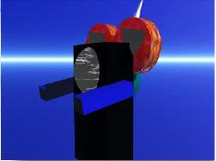
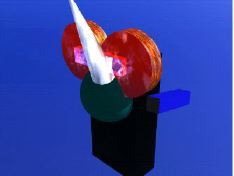

Bart and Homer's Future Meals (BHFM) II
LAWN AND GARDEN SERIES
1. Weeddrill

|
This is my newest invention. I have been gone for awhile but I'm back. I'm been completely out of ideas but now I've got some and here it is. A Bryce II production . This first image is the weed drill. It drills a hole directly into the weed, then injects the special soil killer and PRESTO - no more weed.
2. Weedspray

|
The weedspray 2000 - new improved version - is much more effective than "weeddrill". It ejects a large layer of thermal weed gas. The improvement is that the gas containers can be refilled and when you're cloe enough to the thermal gas you can plug in the manual gas injector.
|
 |

|
|
 |
The weedkiller backback is the newest invention in the manaul thermal gas hookup. Simply plug the extension cord into the thermal storage container. The advantage is that the special power couplings absorb thermal gas from solar sources.

|
The vacuum safely sucks all weed material into storage compartment then flushes radioactive fluids in and sfaely vaporizes it.

|
The flamer, well, lives up to its name!!

Alex Howlett
and
Kyle Ross
This page is under construction - March 28, 1997
Last Update February 18, 1998
All drawings, graphics etc. displayed here were designed with Mechanisto Version 1.0.2. and Bryce II by two ten (now eleven) year olds. Feel free to copy or download them!
We will be designing more graphics and will upload them soon. Be sure to check this program out!
Kyle and Alex

Return to the SFU homepage.
|
Alex
|
Anna
|
Becky
|
Mike
]
Site Visits Since March 28, 1997